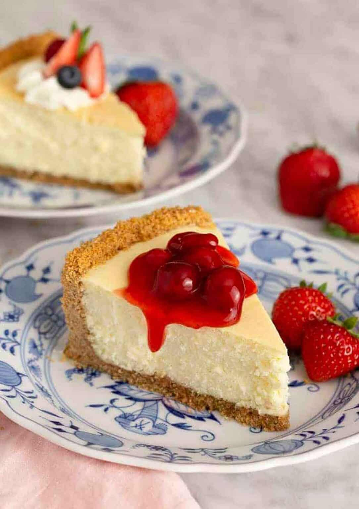

Cheesecake recipe

Description
Creamy, smooth, and rich, this classic cheesecake recipe with a
buttery graham cracker crust is simply decadent. My no-fuss recipe
is a must-try— plus, there's no water bath required for a
crack-free cheesecake!
Ingredients
- Brick cream cheese: Four 8-ounce bricks of full-fat cream cheese are the base of this cheesecake. That's 2 pounds. Make sure you're buying the bricks of cream cheese and not cream cheese spread. There are no diets allowed in cheesecake, so don’t pick up the reduced-fat variety!
- Sugar: 1 cup. Not that much considering how many mouths you can feed with this dessert. Over-sweetened cheesecake is hardly cheesecake anymore. Using only 1 cup of sugar gives this cheesecake the opportunity to balance tangy and sweet, just as classic cheesecake should taste.
- Sour cream: 1 cup. I recently tested a cheesecake recipe with 1 cup of heavy cream instead, but ended up sticking with my original (which can be found here with blueberry swirl cheesecake!). I was curious about the heavy cream addition and figured it would yield a softer cheesecake bite. The cheesecake was soft, but lacked the stability and richness I wanted. It was almost too creamy. Sour cream is most definitely the right choice.
- A little flavor: 1 teaspoon of pure vanilla extract and 2 of lemon juice. The lemon juice brightens up the cheesecake's overall flavor and vanilla is always a good idea.
- Eggs: 3 eggs are the final ingredient. You'll beat the eggs in last, one at a time, until they are *just* incorporated. Do not overmix the batter once the eggs are added. This will whip air into the cheesecake batter, resulting in cheesecake cracking and deflating.
Steps
- Preheat and Prep
Preheat oven to 325°F (163°C).
If using, prepare a 9-inch springform pan by lightly greasing it and wrapping the bottom in aluminum foil (to help with the water bath).
- Make the Crust (if using):
Mix graham cracker crumbs, sugar, and melted butter.
Press the mixture into the bottom of the springform pan (you can also press it slightly up the sides).
Bake for 10 minutes, then remove and let cool while you make the filling.
- Prepare the Cheesecake Filling:
In a large bowl, beat the cream cheese using a hand or stand mixer on medium speed until smooth and creamy—about 2 minutes.
Add 1 cup sugar and beat until combined and smooth.
Add the sour cream, vanilla extract, and lemon juice, and mix until smooth.
Add eggs one at a time, mixing just until incorporated after each. Do not overmix.
- Assemble and Bake:
Pour the filling over the cooled crust (or directly into the pan if crustless).
Place the springform pan into a large roasting pan and fill the outer pan with hot water halfway up the sides of the cheesecake pan (this is your water bath to prevent cracking).
Bake for 55-70 minutes. The center should still jiggle slightly when gently shaken.
- Cool Gradually:
Turn off the oven, crack the oven door, and let the cheesecake cool inside for 1 hour.
Then, remove it from the water bath and let cool at room temperature for another 1 hour.
- Chill:
Cover and refrigerate for at least 4 hours, preferably overnight.
Optional Toppings:
Fresh berries, fruit compote, whipped cream, or chocolate ganache.
Back To Homepage